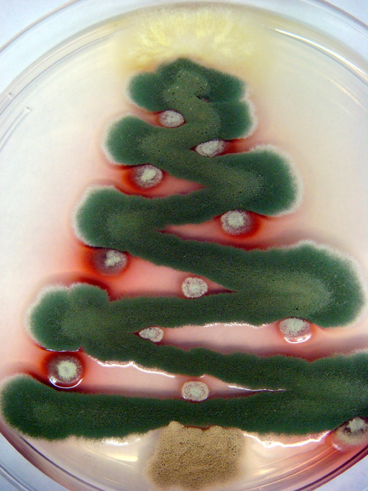
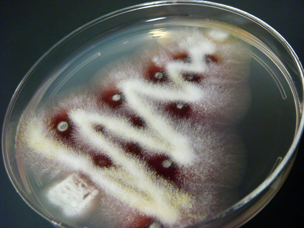
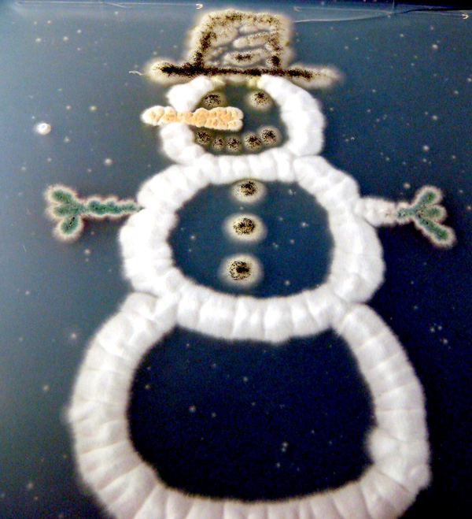
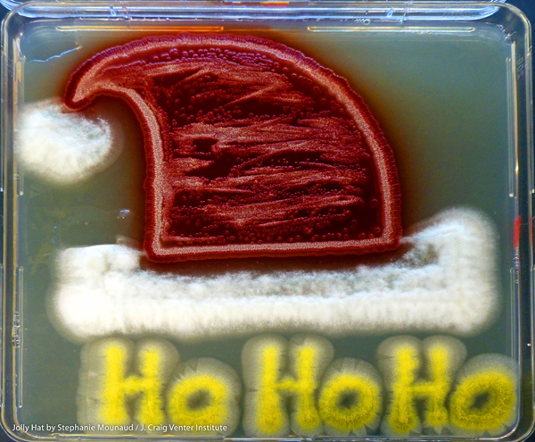

В новогодние праздники принято украшать дом и рабочее место различной новогодней и рождественской символикой, чтобы создать праздничную атмосферу. Не отстают в этом и микробиологи, создавая удивительные по красоте картины в… чашке Петри.
В новогодние праздники принято украшать дом и рабочее место различной новогодней и рождественской символикой, чтобы создать атмосферу праздника. Не отстают в этом и микробиологи, создавая удивительные по красоте картины в… чашке Петри.
Да, это всего лишь изображения ёлки и снеговика и шапки, созданные микроорганизмами. Но если учёный застрял в лаборатории в течение всего дня, а так хочется праздничного настроения, то почему бы ни использовать для этого несколько чашек Петри с праздничными грибами?
Позвольте спросить: когда вы думаете о грибках, что первое, что всплывает в вашем воображении? Как правило, это чёрная или зелёная плесень, которой покрывается кусок сыра в холодильнике или забытый кусок хлеба, и выглядит это в большинстве случаев не слишком приятно. Обычно грибок имеет плохую репутацию; но исследователи решили показать их истинную красоту в несколько шутливой форме. Как известно, красота находится в глазах смотрящего, поэтому учёные попробовали убедить остальных, что грибок — это не только та гадость, что растёт на стенках холодильника и на грязных тарелках. На созданных ими картинах грибки выступили материалом для настоящих художественных произведений.
Итак, в одном малоизвестном месте, на 3-м этаже института J. Craig Venter (JCVI) в Роквилле, штат Мэриленд (США), в небольшом помещении, где проводятся исследования грибов, наука встретилась с искусством. Эти картины были созданы в чашках Петри с использованием грибов Aspergillus, Penicillium, Talaromyces и Neosartorya.

Грибная новогодняя ёлка.
Верхушка: Talaromyces stipitatus; дерево: Aspergillus nidulans; украшения: Penicillium marneffei, ствол: Aspergillus terreus.

Ещё одна грибная рождественская ель.

Грибной снеговик.
Шляпа, глаза, рот, пуговицы: Aspergillus niger, руки: Aspergillus nidulans, нос: Aspergillus terreus с Penicillium marneffei, туловище: Neosartorya fischeri.

Шапка Санта-Клауса.
Нижний край и пумпон: Neosartorya fischeri, шляпа: Penicillium marneffei, надпись: Aspergillus flavus.
Самое захватывающее, что художник, Стефани Мауноуд (Stephanie Mounaud), заранее смогла предсказать закономерности, по которым грибы будут расти. Это на самом деле не так просто, и показывает, что она действительно хорошо знает свою работу. По её словам, она уже продумывает новые сценарии для подобных конструкций в будущем.
Фотографии были сделаны в нужное время на определённом этапе роста микроорганизмов. Интересно, что случилось с ними потом, когда они выросли за пределы чашки Петри, и что было сделано с этими картинами, когда этот проект был закончен? Эти грибы слишком красивы, чтобы просто уничтожить их…
J. Craig Venter Institute (JCVI) Blog
Holiday Art by Stephanie Mounaud.
blogs.jcvi.org